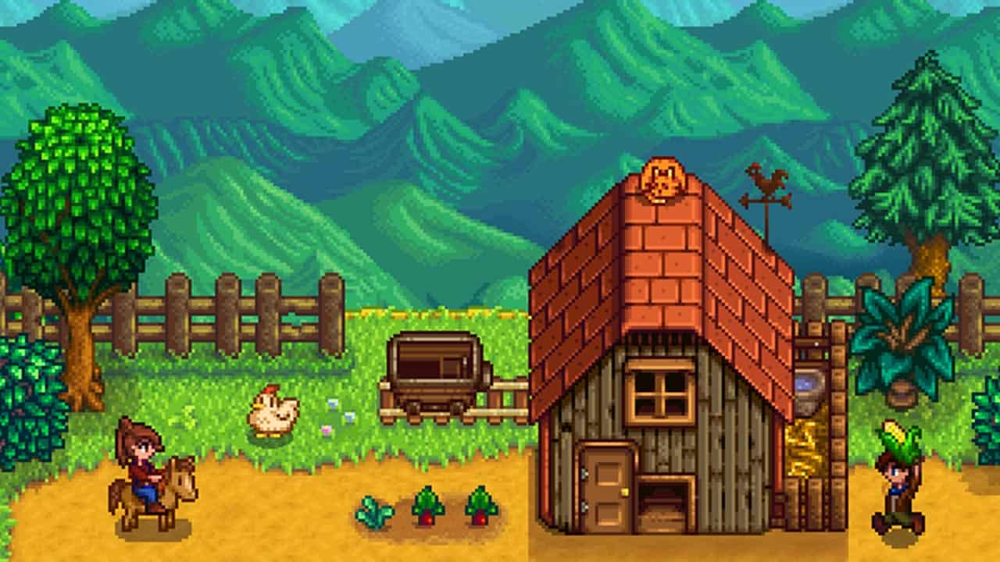
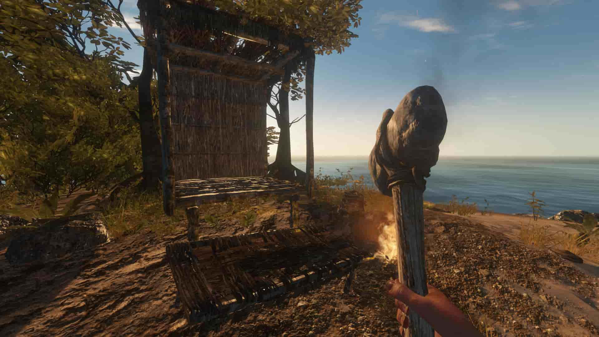
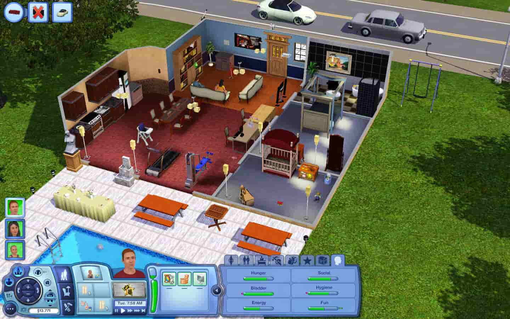
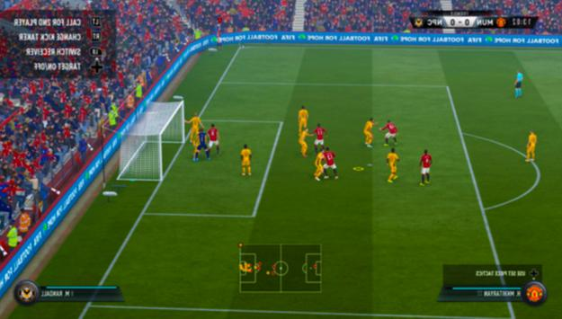
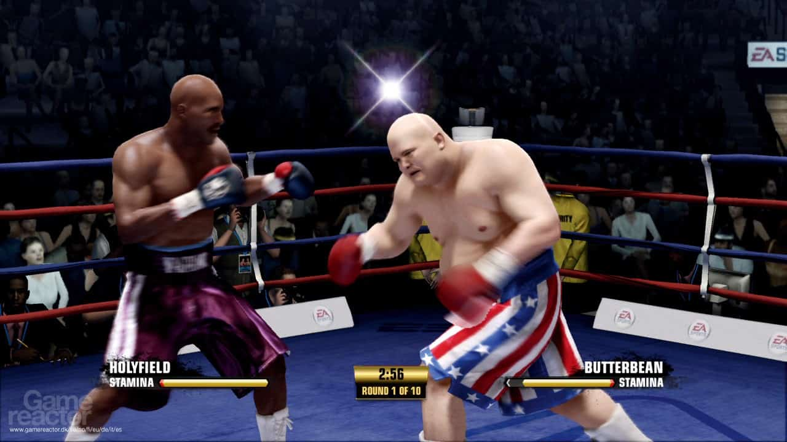
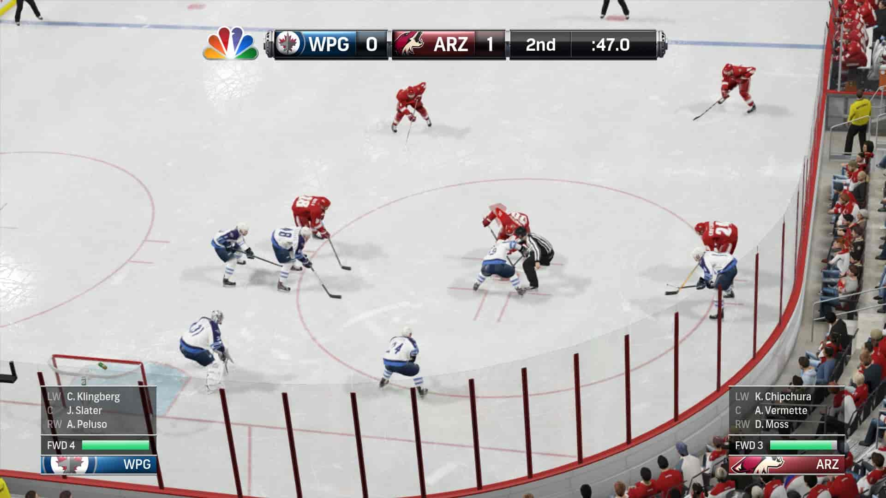
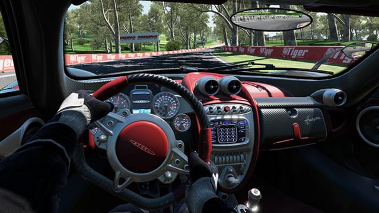
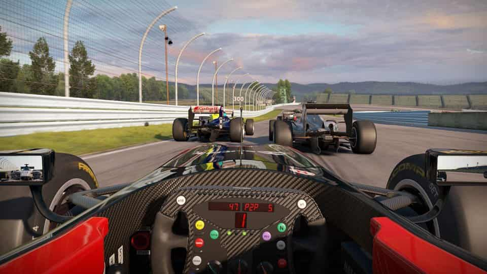

Симуляторы
Симуляторы — имитаторы, механические или компьютерные, имитирующие управление каким-либо процессом, аппаратом или транспортным средством. Чаще всего сейчас слово «симулятор» используется применительно к компьютерным программам (обычно играм).
Симуляторы жизни
Симулятор жизни (англ. life simulation game) — жанр компьютерных игр, в котором игрок управляет жизнью одного или нескольких виртуальных существ. Является поджанром жанра стратегий, симулятора бога или экономических симуляторов. Как правило, симуляторы жизни не имеют конкретной цели.
- 
- 
- 
Спортивные симуляторы
Спортивный симулятор — симулятор спортивных состязаний.
- 
- 
- 
Автосимуляторы
Автосимуляторы — это не все гонки, в которых «игрок управляет автомобилем», как утверждает «Википедия». Это игры в первую очередь о гоночных трассах, заездах на время и более-менее реалистичной физике вождения авто.
- 

- 